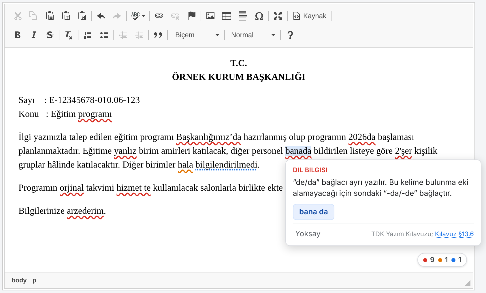

EBYS evrak editöründe yazarken Türkçe yazım, noktalama, Resmî Yazışma Yönetmeliği ve Resmî Yazışma Kuralları Kılavuzu’na göre hataların altını çizer, doğrusunu önerir ve her uyarının dayanağını gösterir. Tamamen bilgisayarınızda çalışır: hiçbir izin istemez, ağa bağlanmaz, metin hiçbir yere gönderilmez.
